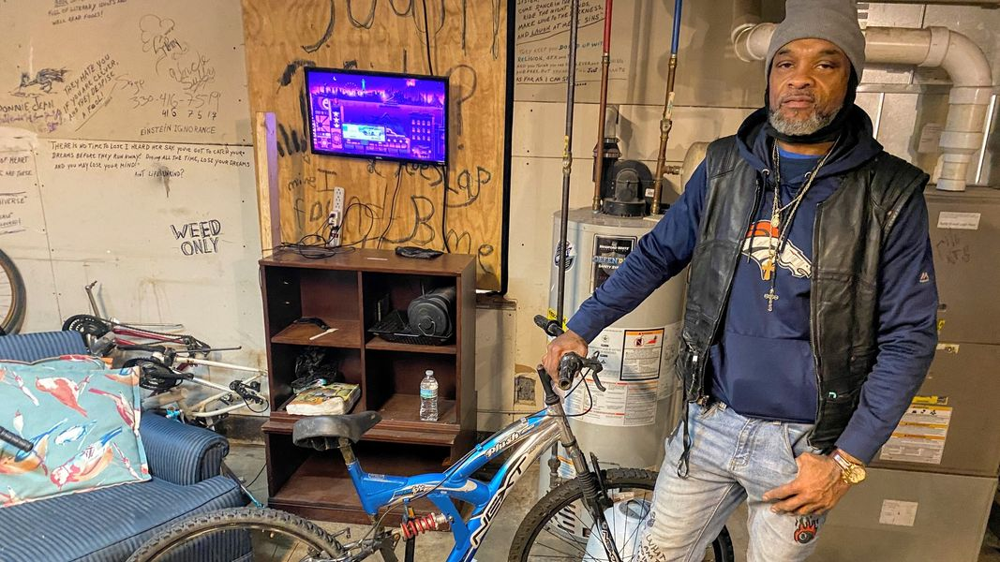

Timeline photos
In addition to our community cleanup job program, we also have a bicycle repair program.
This is Darren Anderson, he goes by DNA. He's standing next to a bike that was donated to us that he fixed up.
He put new tubes in the tires, fixed the gear shifting mechanism, and got the brakes working.
I paid him $20 to do the repair work.
He really likes doing this work. I could either sell this bike to someone who has cash or have them work the bike off with other jobs. (There is very little cash in the homeless community, but there are a lot of people willing to work for things they need.)
After I quit restaurant work in my 20s, I never went back to a "real" job again. I much prefer working for myself. I think many homeless people feel the same way.
I am trying to show my homeless friends how they can generate money as entrepreneurs. Some of them are doing it already. They scrap metal and sell stuff on Facebook Marketplace. I'm just trying to expand that thinking.
Bicycle repair is definitely a needed service in low-income communities. Many people in Akron don't have a license or car, so they rely on the bus, walking, or bicycles.
Bicycles are probably the most stolen items in the homeless community after phones. Both of these items are highly valuable because they are so useful.
(Phone repair is also on my mind as a possible program.)
If you find these empowering programs inspiring, we can definitely use your help.
We need bicycle parts such as tubes, brake cables, shifting cables, brake pads, and others.
We also need money to pay people like DNA to repair the bikes. So, financial donations are incredibly valuable. You can do that here if you are inspired to do so:
https://houselessmovement.org/donate/
From the bottom of my heart, I am so deeply thankful for your support. Thank you.